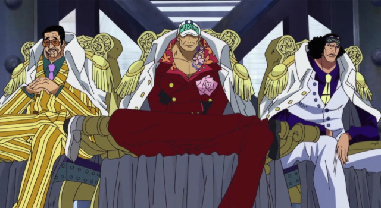

História
A Marinha é a força marítima militar do Governo Mundial, encarregada da aplicação da lei, segurança internacional e operações militares. Os marinheiros são um dos Três Grandes Poderes do mundo, ao lado dos Shichibukai e dos Yonkou.
Eles estão presentes em todos os mares ao redor do mundo, como evidenciam suas filiais. O foco de seus ativos está na muito mais perigosa Grand Line.
No rescaldo da Batalha de Marineford, a base de operações do Quartel General da Marinha foi transferido para o Novo Mundo. Devido às suas ações e papel em geral, eles são um dos principais grupos antagonistas da série.
O dever dos Marinheiros é manter a lei e a ordem em todo mundo e impor a vontade e o poder do Governo Mundial. Eles são, portanto, considerados a força de desenvolvimento estratégico chave do Governo Mundial e espera-se obedecer ás suas ordens à vontade. As vezes, esses ordens são questionáveis, no entanto eles são esperados para realizá-las, independentemente da opinião. Entre suas funções está conceder recompensa aos caçadores de recompensas sobre a cabeça de um criminoso. Eles toleram caçadores de recompensas como método de fazer o seu trabalho mais fácil, mas são conhecidos por terem recompensas por suas cabeças também. Criminosos detidos que são trazidos vivos são entregues como um exemplo de : os marinheiros são encarregados de assegurar a exportação desses criminosos para prisão e/ou a sua execução.
Marinheiros superiores classificados (almirantes e o almirante da frota) devem ser chamados para liderar as forças da Marinha para a guerra. isto pode assumir a forma de apreender muitos criminosos de uma só vez, protegendo o Nobre Mundial ou chamar um Buster Call para enfrentar uma situação. Vice-almirantes são os que servem a bordo dos navios que os almirantes chamam e são encarregados de executar as ordens que recebem dos almirantes.